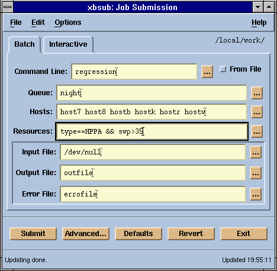
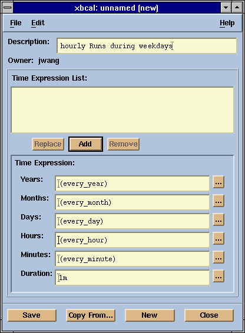

LSF User's Quick Reference

Common Options
All commands take the following options. They will
not be shown unless they differ for a specific command:
- -h Print command usage
to standard error and exit.
- -V Print LSF version to
standard error and exit.
LSF Base System Information
lsid
Display the LSF release version, the name of the
local load sharing cluster, and the name of its master LIM host.
lsclusters
Display general configuration information about LSF
clusters.
lsclusters [-l] [cluster...]
- -l
- Display information in a (long) multi-line format.
- cluster...
- Display information about the named cluster(s). Default: all clusters.
lsinfo
Display information about the LSF configuration, including
available resources, host types and host models.
lsinfo [-l] [-r] [-m] [-t] [resource...]
- -l
- Display resource information in a (long) multi-line format.
- -r
- Display information about configured resources.
- -m
- Display information about configured host models.
- -t
- Display information about configured host types.
- resource...
- Display information about the named resource(s). Default: all resources.
lshosts
Display information about LSF host configuration,
including host type, host model, CPU normalization factor, number of CPUs,
maximum memory, and available resources.
lshosts [-l] [-R res_req] [host...|cluster...]
- -l
- Display information in a (long) multi-line format.
- -R res_req
- Display information about the hosts that meet the specified resource
requirements. Default: display information for all hosts.
- host...|cluster...
- Display configuration information for the named host(s) or cluster(s).
Default: display information for all hosts.
LSF Batch System Information
bhosts
Display information about the server hosts in the
LSF Batch system.
bhosts [-l|-w] [-R res_req] [host...|cluster]
- -l
- Display information in a (long) multi-line format.
- -w
- Display fields in a (long) multi-line format without truncation.
- -R res_req
- Display information about the hosts that meet the specified resource
requirements. Default: display information for all hosts in the local cluster.
- host...|cluster
- Display information on the named host(s) or cluster. Default: display
information for all hosts in the local cluster.
bhpart
Display information about host partitions in the LSF
Batch system.
bhpart [host_partition...]
- host_partition...
- Display information about the named host partition(s). Default: all.
bparams
Display information about the configurable LSF Batch
system parameters. By default only display the most 'interesting' parameters.
bparams [-l]
- -l
- Display all the parameters along with brief descriptions and their
corresponding names.
bqueues
Display information about batch queues in the LSF
Batch system.
bqueues [-l|-w] [-m host|cluster] [-u user] [queue...]
- -l
- Display information in a (long) multi-line format.
- -w
- Display fields in a (long) multi-line format without truncation.
- -m host|cluster
- Display queues from which jobs may be dispatched to the named host
or host group. Default: all hosts. Otherwise, display the queues in the
named remote cluster.
- -u user
- Display the queues to which the named user or user group may submit
batch jobs. Default: all users.
- queue...
- Display information about the named queue(s).
busers
Display information about LSF Batch users and user
groups.
busers [user...|all]
- user...|all
- Display information about the named user(s) or user group(s) or about
all users and user groups. Default: display information about
the invoker.
bugroup and bmgroup
Display LSF Batch user or host group membership.
If a group member is a group itself (subgroup), then a slash '/' is appended
to its name.
bugroup [-r] [group...]
bmgroup [-r] [group...]
- -r
- Expand the group membership recursively.
- group...
- Display the membership of the named group(s). Default: display the
members of all groups.
Placement Tools
lsplace
Query LIM daemon for a placement decision. This command
is normally used in an argument to select hosts for other commands.
lsplace [-L] [-R res_req] [-n needed] [-w wanted] [host...]
- -L
- Attempt to place tasks on as few hosts as possible.
- -R res_req
- Only the hosts that meet the specified resource requirements are considered.
Those with lowest load are selected. Default: select for CPU and memory
intensive tasks, needing the same type of hosts as the local host.
- -n needed
- The number of CPUs that are minimally required. Default: 1.
- -w wanted
- Maximum number of CPUs wanted. Default: 1.
Command exit status:
- 0 Normal.
- 1 Not enough hosts available.
- -10 Failure detected in the LSF system.
- -1 Other errors.
lsrtasks and lsltasks
Display or update the user's remote or local task
lists. These task lists are maintained by LSF on a per user basis to store
the resource requirements of tasks. Default: display the task list in multi-column
format.
lsrtasks [+|- task[/res_req]...]
lsltasks [+|- task...]
- + task[/resreq]...
- Add the task(s) to the task list, along with any optional resource
requirements.
- - task...
- Remove the task(s) from the task list.
Interactive Remote Execution
lsrun
Submit a task to the LSF system for execution, possibly
on a remote host.
lsrun [-S] [-P] [-l] [-v] [-m host...|cluster...] [-R res_req]
task [arg...]
- -S
- Create a pseudo-terminal with shell mode support when starting a remote
task. Shell mode support is required for applications which redefine the
CTRL-C and CTRL-Z
keys.
- -P
- Create a pseudo-terminal when starting a remote task.
- -l
- Always execute the task locally if remote execution fails. Default:
execute locally only if the local host also satisfies the resource requirements.
- -v
- Verbose mode. The name of the selected host is displayed.
- -m host...|cluster...
- Specify the candidate host(s) or cluster(s) for executing the task.
If none of the candidate hosts satisfy the resource requirements, the task
will not run. If only one host is specified, this option overrides the
-R option and the task will be executed on
that host.
- -R res_req
- Execute the task on a host that meets the resource requirements. If
-R and -m are
not specified, the resource requirements from the remote task list are
used. Default: type==local unless a model or boolean resource
is specified, in which case type==any order[r1m:pg].
lsgrun
Execute a task on the specified group of hosts.
lsgrun [-i] [-S] [-P] [-p] [-v] -f file | -m host...| -n needed
[-R res_req] [task [arg... ]]
- -i
- Interactive operation mode. The user is asked if task will be executed
on all hosts.
- -S
- Create a pseudo-terminal with shell mode support when starting a remote
task. Shell mode support is required for applications which redefine the
CTRL-C and CTRL-Z
keys.
- -P
- Create a pseudo-terminal when starting a remote task.
- -p
- Parallel run mode. If specified, the task is executed on all hosts
simultaneously without pseudo-terminal support.
- -v
- Verbose mode. The name of the selected host is displayed.
- -f file
- Specify a file that contains a list of host names. This option is exclusive
of options -m, -n,
and -R.
- -m host...
- Specify the candidate host(s) to execute task. This option is exclusive
of options -f, -n,
and -R.
- -n needed
- Specify the number of processors to run task. A host may be used to
start several tasks if it is a multiprocessor. This option can be used
with option -R, and is exclusive of options
-f and -m.
- -R res_req
- Execute the task on a host that meets the specified resource requirements.
This option can be used with option -n. Default: type==local
unless a model or boolean resource is specified, in which case type==any
order[r15s:pg].
- task[arg...]
- The name of the task to be executed. If it is not specified, then the
user is prompted to enter a command terminated by CTRL-D
or EOF.
lstcsh
A load sharing version of tcsh (an enhanced
version of the C shell). lstcsh accepts all the options used by
tcsh, plus the additional -L option.
lstcsh [-bcdefimnstvVxXL] [arg...]
- -L Execute an lstcsh
script with load sharing enabled.
lsmake
A modified version of GNU make which executes
make tasks in parallel on LSF hosts. lsmake accepts all the options
used by GNU make (makeoptions). It also has additional
options to support its LSF features.
lsmake [-m host... | [[-R res_req] [-j N]]] [-c N] [-F res_req]
[-P period] [-M] [-V] [-E] [-v] [makeoptions] [target...]
- -m host...
- Specify the candidate host(s) to execute task. This option cannot be
used if -j and/or -R
is specified.
- -R res_req
- Use hosts satisfying the specified resource requirements. Used along
with the -j option. Default: use hosts that
are the same type and are lightly loaded in CPU and memory.
- -j N
- Select at most N CPU slots. A CPU slot corresponds to a host,
with multiprocessors having several CPU slots. This option cannot be used
if -m is specified.
- -c N
- Start N tasks concurrently in each CPU slot. Default: only one
task is started in each CPU slot.
- -F res_req
- File server saturation threshold requirement. If the file server becomes
overloaded, the parallelism is gradually reduced until the load is within
the threshold. Default: do not consider file server load.
- -P period
- CPU slot reselection period in minutes. This ensures that lightly loaded
hosts are used. Default: do not reselect slots.
- -M
- Process sub-makes in parallel. Default: process submakes sequentially.
- -V
- Turn on verbose remote execution mode.
- -E
- Set environment variables for each task executed remotely. Default:
when lsmake first starts up, set the environment variables once
on the remote hosts.
- -v
- Print LSF version and the version number of GNU make to standard
error and exit.
lslogin
Select a lightly loaded host that has few users and
remotely log in, using the rlogin command. lslogin accepts
all the options used by rlogin, including the host option. It
has additional options to support its LSF features
lslogin [-v] [-R res_req] [rlogin_options]
- -v
- Display the name of the selected host.
- -R res_req
- Select a host satisfying the specified resource requirements. Default:
type==any order[ls:r1m].
ch
Change to a host with the same execution environment
on which subsequent commands will be executed.
ch [-t] [-S] [hostname]
- -t
- Timing option. Display amount of time each subsequent command takes
to execute.
- -S
- Start the remote tasks with shell mode support. Shell mode support
is required for applications which redefine the CTRL-C
and CTRL-Z keys. The default is not to enable
shell mode support.
- hostname
- Change host to hostname. Default: local host.
Built-in commands:
- cd [dir]
- Change current working directory to dir. Default: user's HOME
directory.
- ch [hostname]
- Change the current host to hostname. Default: host where ch
command was first executed.
- post [command [arg...]]
- Execute command in the background on the current host. Display
a unique taskID. Output from background jobs may be sent to your
monitor which could cause display problems. Default: display all currently
running background tasks.
- contact taskID
- Put the previously posted background task into the foreground. taskID
was returned by the post command.
- exit
- Exit ch if there are no posted commands running.
An ampersand & following a command line
(Bourne shell background job) is ignored by ch. Use post
to execute a command in the background.
The special path name ~ is treated as in
the Bourne shell.
Cluster Load Monitoring
lsload
Display load information on hosts, in order of increasing
load.
lsload [-N | -E] [-l] [-R res_req] [-I index] [-n number]
[host...|cluster...]
- -N
- Return normalized CPU run queue length load indices. CPU run queue
values are normalized using the number of CPUs and the CPU factors of the
hosts. Default: return raw load indices. Options -N
and -E are mutually exclusive.
- -E
- Return effective CPU run queue length load indices. CPU run queue values
are normalized using the number of CPUs of the hosts. Default: return raw
load indices. Options -N and -E
are mutually exclusive.
- -l
- Display information in a long format.
- -R res_req
- Display information about the hosts that meet the specified resource
requirements. Default: type==any order[r1m:pg].
- -I index
- Display only the specified load indices. List of load index names are
separated by ':' (r1m:pg:ut).
- -n number
- Display up to the specified number of hosts that best satisfy the resource
requirements. Default: display all hosts that satisfy the resource requirements.
- host...|cluster...
- Display information for the named host(s) or cluster(s). Default: display
information for all hosts. If -R is specified,
display all hosts that satisfy the resource requirements.
lsmon
Full screen LSF monitoring utility displaying dynamic
load information of hosts. lsmon supports all the lsload
options, plus the additional -i and -L options. It also
has run-time options.
lsmon [-N | -E] [-n number] [-R res_req] [-I index] [-i interval]
[-L logfile] [host...|cluster...]
- -i interval
- Update interval of load information. Default: 10 seconds.
- -L logfile
- Save the load information into the specified file.
Run-time options:
- ^L Refresh the screen.
- i Input a new update
interval.
- n Input a new number
of hosts to display.
- N Switch between
displaying normalized and raw CPU load indices.
- E Switch between
displaying effective and raw CPU load indices.
- R Input new resource
requirements.
- q Quit lsmon.
xlsmon

A Motif graphical user interface for monitoring
the load on the hosts in an LSF cluster.
Batch Job Submission
bsub
Submit a job for execution in the LSF Batch system.
If no command is given, bsub reads job commands from the standard
input. If the standard input is a controlling terminal, bsub prompts
for commands.
bsub [-x] [-r] [-N] [-B] [-I | -Ip | -Is] [-q queue...]
[-m host[+[level]]...] [-n min[,max]] [-R res_req] [-J jobname] [-b begin]
[-t terminate] [-i infile] [-o outfile] [-e errfile] [-u user]
[[-f "[lfile op [rfile]]"] ...] [-c cpu[/spec]] [-W run[/spec]] [-F file]
[-M mem] [-D data] [-S stack] [-C core] [-k "dir [period]"] [-w depend]
[-E "pre_exec [arg...]"] [-L shell] [-P project] [command [arg...]]
- -x
- Exclusive execution mode.
- -r
- Specifies that the job can be rerun.
- -N
- Notify the submitter by mail when the job finishes. If -o
option is not given, the standard output from the job is included in the
message.
- -B
- Notify the submitter by mail when the job is dispatched and begins
execution.
- -I
- Submit an interactive job. bsub blocks until the job is terminated.
See -i, -o, and
-e options. Default: job interacts with user's
terminal.
- -Ip
- Submit an interactive job and create a pseudo-terminal when the job
starts.
- -Is
- Submit an interactive job and create a pseudo-terminal with shell mode
support when the job starts. Shell mode support is required for applications
which redefine the CTRL-C and CTRL-Z
keys.
- -q queue...
- Submit the job to the specified queue(s). Default: the system default
queue.
- -m host[+[level]] ...
- Limit candidate hosts for executing this job to the specified host(s).
'+' is used to specify preference. level is a positive
number specifying the preference level of a host.
- -n min[,max]
- The minimum and maximum number of processors requested to run a (parallel)
job. Default: one processor.
- -R res_req
- Execute the task on a host that meets the resource requirements. Default:
type==local unless a model or boolean resource is specified,
in which case type==any order[r1m:pg].
- -J jobname
- Assign the specified character string to the job.
- -b begin
- Dispatch the job for execution on or after the specified time.
- -t terminate
- The job termination deadline. Default: allow the job to run as long
as its resource limits permit.
- -i infile
- The job gets its standard input from the specified file. Default: /dev/null
(UNIX).
- -o outfile
- Write the standard output of the job to the specified file. Default:
sent by mail to the user.
- -e errfile
- Write the standard error output of the job to the specified file.
- -u user
- Send mail to a specified email address. Default: send mail to the submitting
user according to the format specified in lsf.conf file.
- -f "[lfile op [rfile]]"...
- Copy a file between the local (submission) host and the remote (execution)
host. op is one of '>', '<', '<<',
or '><' (or '<>'). op is illegal
without at least one of lfile or rfile.
- -c cpu[/spec]
- Set the total CPU time limit for this job. Default: no limit. The optional
spec defines the appropriate host CPU scaling factor.
- -W run[/spec]
- Set the wall-clock run time limit of this job. Default: no limit. spec
is the same as in the -c option.
- -F file
- Set a per-process (soft) file size limit for each of process belonging
to this job. Default: no soft limit.
- -M mem
- Set the total process resident set size limit in Kbytes for the whole
job. Default: no limit.
- -D data
- Set a per-process (soft) data segment size limit for each of the processes
that belong to this job. Default: no soft limit.
- -S stack
- Set a per-process (soft) stack segment size limit for each of the processes
that belong to this job. Default: no soft limit.
- -C core
- Set a per-process (soft) core file size limit for all the processes
that belong to this job. Default: no soft limit.
- -k dir [period]
- This job can be checkpointed. The checkpoint directory is a relative
or absolute path name, and is used for restarting the job (see brestart).
Multiple jobs can checkpoint into the same directory. Optionally, a checkpoint
period in minutes may be specified.
- -w depend
- Only when the dependency condition is satisfied (TRUE), will
the job be considered for dispatch. The expression is composed of job or
system conditions using '&&', '||' and '!'
logic operators. Conditions are job status, calendar, file event, or user
event.
- Job status conditions:
- started(jobId|jobName), done(jobId|jobName), exit(jobId|jobName),
and ended(jobId|jobName)
- Calendar conditions (calendars are only available with LSF
JobScheduler):
- calendar(cal_spec) or cal(cal_spec)
- File event conditions:
- file(arrival(location)|exist(location)|size(location)| age(location))
- User event conditions:
- event(spec) or ev(spec)
- -E "pre_exec [ arg... ]"
- Execute the pre-execution command on the host to which the job is dispatched
to run (or on the first host selected for a parallel job) before actually
running the job. If the pre-execution command exits with 0, start the primary
job; otherwise the job remains pending.
- -L shell
- Specifies the name of the login shell used to initialize the execution
environment.
- -P project
- Specifies the name of the project that this job will be charged to.
Batch Job Tracking
bjobs
Display the status and other information about jobs
in the LSF Batch system.
bjobs [-l | -w] [-a] [-d] [-p] [-s] [-r] [-N spec] [-q queue]
[-m host|cluster] [-u user|all] [-J jobname] [-P project] [jobId...]
- -l
- Display information in a (long) multi-line format.
- -w
- Display fields in a (long) multi-line format without truncation.
- -a
- Display information about all jobs, including unfinished jobs (pending,
running or suspended) and recently finished jobs.
- -d
- Display only recently finished jobs.
- -p
- Display only pending jobs, with the reasons they were not dispatched
during the last dispatch turn.
- -s
- Display only suspended jobs, showing the reason for suspension.
- -r
- Display only running jobs.
- -N spec
- Display CPU time consumed by the job. The appropriate CPU scaling factor
for the specified host, or defined host model, is used to normalize the
actual CPU time consumed by the job.
- -q queue
- Display only jobs in the named queue.
- -m hostname
- Display only jobs dispatched to the named host or host group.
- -u user|all
- Display jobs submitted by the named user or by all users. Default:
display the jobs submitted by the user who invoked this command.
- -J jobname
- Display all jobs with the s[ecified name.
- -P project
- Display only jobs belonging to the named project. Default: display
jobs belonging to all projects.
- jobId...
- Display the job(s) with the specified job ID. The value 0 is ignored.
bhist
Display the history of one or more jobs in the LSF
Batch system.
bhist [-b] [-l] [-w] [-a] [-d] [-p] [-s] [-r] [-f logfile] [-N spec]
[-C time0,time1] [-S time0,time1] [-D time0,time1] [-q queue] [-m host]
[-u user|all] [-J job] [-n number] [-P project] [jobId...]
- -b
- Display the job history in a brief format. Default: display summary
format.
- -l
- Display the job history in a (long) multi-line format, giving detailed
information about each job. Default: display summary format.
- -w
- Display the job history in a (wide) multi-line format without truncation.
Default: display summary format.
- -a
- Display all, both finished and unfinished, jobs. Default: finished
jobs are not displayed.
- -d
- Display only the finished jobs.
- -p
- Display only the pending jobs.
- -s
- Display only the suspended jobs. If option -l
or -b is also specified, show the reason
why each job was suspended.
- -r
- Display only the running jobs.
- -f logfile
- Specify the file name of the event log file. Either an absolute or
a relative path name may be specified. Default: use the system event log
file lsb.events.
- -N spec
- Display CPU time consumed by the job. The appropriate CPU scaling factor
for the specified host, or defined host model, is used to normalize the
actual CPU time consumed by the job.
- -C time0,time1
- Display only those jobs whose completion or exit times were between
time0 and time1. Default: display all jobs that have completed
or exited.
- -S time0,time1
- Display only those jobs whose submission times were between time0
and time1. Default: display all jobs that have been submitted.
- -D time0,time1
- Display only those jobs whose dispatch times were between time0
and time1. Default: display all jobs that have been dispatched.
- -q queue
- Display jobs submitted to the specified queue only. Default: display
all queues.
- -m host
- Display jobs dispatched to the specified host only. Default: display
all hosts.
- -u user|all
- Display jobs submitted by the named user or by all users. Default:
display the jobs submitted by the user who invoked this command.
- -J jobname
- Display all jobs with the s[ecified name.
- -P project
- Display only jobs belonging to the named project. Default: display
jobs belonging to all projects.
- jobId...
- Display the specified job(s).
bpeek
Display the standard output and standard error that
has been produced by an unfinished batch job in the LSF Batch system.
bpeek [-f] [-q queue | -m host | -J jobname | jobId]
- -f
- Display the output of the job using the command "tail -f".
Default: use the command "cat".
- -q queue
- Display the output of the most recently submitted job in the specified
queue.
- -m host
- Display the output of the most recently submitted job that has been
dispatched to the specified host.
- -J jobname
- Display the output of the most recently submitted job that has the
given name.
- jobId
- Display the output of the specified job. Default: display the output
of the most recently submitted job that satisfies options -q,
-m, or -J.
Batch Job Manipulation
bmodify
Modify the options of a previously submitted job.
bmodify uses a subset of the bsub
options. To reset an option to its default value, use the option string
followed by 'n'.
bmodify [-x | -xn] [-r | -rn] [-N | -Nn] [-B | -Bn] [-q queue... | -qn]
[-m host... | -mn] [-n number | -nn] [-R res_req | -Rn] [-J jobname | -Jn]
[-b begin | -bn] [-t terminate | -tn] [-i infile | -in] [-o outfile | -on]
[-e errfile | -en] [[-f "[lfile] op [rfile]"] ... | -fn]
[-c cpu[/host | -cn]] [-W run [/host ] | -Wn] [-F file | -Fn]
[-M mem | -Mn] [-D data | -Dn] [-S stack | -Sn] [-C core | -Cn]
[-k dir [period] | -kn] [-s sigval | -sn] [-w depend | -wn]
[-P project | -Pn] [-E "pre_exec [arg...]" | -En] [-L "shell" | -Ln]
[-O] jobId
- -O
- Change the option values temporarily for the next run of the job. This
option only affects calendar-driven jobs. See LSF
JobScheduler Specific Commands.
- jobId
- Modify the options of the specified job.
bstop and bresume
Suspend or resume one or more unfinished batch jobs.
bstop [-q queue] [-m host] [-u user | all] [-J jobname] [jobId...]
bresume [-q queue] [-m host] [-u user | all] [-J jobname] [jobId...]
- -q queue
- Stop or resume the jobs in the specified queue.
- -m host
- Stop or resume the jobs dispatched to the specified host or host group.
Ignored if a job ID other than 0 is specified.
- -u user | all
- Stop or resume the jobs submitted by the named user or by all users.
Ignored if a job ID other than 0 is specified.
- -J jobname
- Stop or resume the named jobs. Ignored if a job ID other than 0 is
specified.
- jobId...
- Stop or resume the specified jobs.
bkill
Send a signal to one or more unfinished batch jobs
bkill [-l] [-s value | name] [-q queue] [-m host] [-u user | all]
[-J jobname] [jobId...]
- -l
- Display the set of signal names supported. (This is a subset of those
supported by /bin/kill and is platform dependent).
- -s value | name
- Send the signal specified by value or name to the specified jobs. Default:
SIGKILL or 9.
- -q queue
- Send a signal to the jobs in the specified queue.
- -m host
- Send a signal to the jobs dispatched to the specified host or host
group. Ignored if a job ID other than 0 is specified.
- -u user | all
- Send a signal to the jobs submitted by the named user or by all users.
Ignored if a job ID other than 0 is specified.
- -J jobname
- Send a signal to the named jobs. Ignored if a job ID other than 0 is
specified.
- jobId...
- Send a signal to the specified jobs.
bchkpnt
Checkpoint one or more unfinished (running or suspended)
jobs. The job must have been submitted with bsub -k.
bchkpnt [-f] [-k] [-q queue] [-m host] [-u user | all] [-J jobname]
[-p period] [jobId...]
- -f
- Checkpoint a job even if non-checkpointable (operating system-specific)
conditions exist.
- -k
- The job is checkpointed and killed atomically by the system.
- -q queue
- Checkpoint the jobs in the specified queue. Ignored if a job ID other
than 0 is specified.
- -m host
- Checkpoint the jobs dispatched to the named by host or host group.
Ignored if a job ID other than 0 is specified.
- -u user | all
- Checkpoint the jobs submitted by the named user or by all users. Ignored
if a job ID other than 0 is specified.
- -J jobname
- Checkpoint the named jobs. Ignored if a job ID other than 0 is specified.
- -p period
- Checkpoint the job and change its checkpoint period in minutes. A period
of 0 disables periodic checkpointing.
- jobId...
- Checkpoint the specified jobs.
brestart
Submit a job to be restarted from the checkpoint
files in the specified directory. brestart uses a subset of the
bsub options.
brestart [-f] [-x] [-N] [-B] [-q queue] [-m host...] [-b begin]
[-t terminate] [-c cpu[/spec]] [-W run[/spec]] [-F file] [-M mem] [-D data]
[-S stack] [-C core] [-w depend] [-E "pre_exec [arg...]"] dir [jobID]
- -f
- Force the job to be restarted even if non-restartable conditions exist.
Non-restartable conditions are operating system-specific.
- dir
- The checkpoint directory specified with bsub -k.
- jobID
- The last jobID of the checkpointed job.
bmig
Migrate one or more unfinished (running or suspended)
jobs to another host. The job must have been submitted with -r
or -k options to bsub.
bmig [-f] [-m host...] [-u user | all] [-J jobname] [jobId...]
- -f
- Force the job to be migrated and restarted even if non-restartable
conditions exist. Non-restartable conditions are operating system-specific.
- -m host...
- Restrict candidate jobs for migration to those from the named host(s).
- -u user | all
- Migrate the jobs submitted by the named user or by all users. Ignored
if a job ID other than 0 is specified.
- -J jobname
- Migrate the named jobs. Ignored if a job ID other than 0 is specified.
- jobId...
- Migrate the specified jobs.
btop and bbot
Move a pending job to the top (beginning) or bottom
(end) of its queue. This only effects the user's own jobs.
btop jobId [position]
bbot jobId [position]
- jobId
- Move the specified job.
- position
- A positive number that indicates the target position of the job relative
to the beginning (for btop) or end (for bbot) of the
queue.
bswitch
Switch one or more unfinished (running or suspended)
jobs from one queue to another.
bswitch [-q queue] [-m host] [-u user | all] [-J jobname] destination
[jobId...]
- -q queue
- Switch jobs from the specified queue. Ignored if a job ID other than
0 is specified.
- -m host
- Switch jobs dispatched to the named by host or host group. Ignored
if a job ID other than 0 is specified.
- -u user | all
- Switch jobs submitted by the named user or by all users. Ignored if
a job ID other than 0 is specified.
- -J jobname
- Switch the named jobs. Ignored if a job ID other than 0 is specified.
- destination
- The destination queue to which jobs will be switched.
- jobId...
- Switch the specified jobs.
LSF Batch Graphical User Interface Applications
xlsbatch

A Motif based graphical user interface for monitoring
jobs and other aspects of the LSF Batch system.
xbsub

A Motif based graphical user interface for submitting
a job to the LSF Batch system.
LSF JobScheduler Specific Commands
LSF JobScheduler allows users to run calendar-driven
jobs. LSF JobScheduler users can also make use of all LSF Batch capabilities.
bcaladd, bcalmod, and bcaldel
Create , modify, or delete a calendar in the LSF
JobScheduler system (excluding system calendars).
bcaladd [-d description] -t expression... calendar
bcalmod [-d description] [-t expression...] calendar
bcaldel calendar...
- -d description
- A string description of the calendar. If the description contains spaces,
it must be quoted.
- -t expression...
- A list of time expressions separated by spaces. These indicate when
the calendar will be active. The format of a time expression is "year:month:day:hour:min[%duration]".
The time expression list must be quoted.
- calendar
- Name of the calendar.
bcal
Display information about the calendars in the LSF
JobScheduler system.
bcal [-l] [-u user | all] [calendar...]
- -l
- Display detailed calendar information in a (long) multi-line format.
- -u user | all
- Display information about calendars owned by the named user (not applicable
to system calendars) or by all users. Default: display information about
calendars owned by the user who invoked this command and system calendars.
- calendar...
- Display information only about the named calendar(s). Default: display
all calendars.
bcalhist
Display a history of events associated with calendars
(excluding system calendars).
bcalhist [-t time0,time1] [-f file] calendar...
- -t time0,time1
- Display only those calendar modification events between time0
and time1.
- -f file
- Specify the file name of the event log file. Either an absolute or
a relative path name may be specified. The default is to use the event
log file currently used by the LSF Batch system: $LSB_SHAREDIR/clustername/logdir/lsb.events.
Search the named file for history information. The default is to search
the event log file currently used by the LSF Batch system.
- calendar...
- Display information about the named calendar(s).
bdel
Delete one or more unfinished batch jobs. This command
must be used to remove a calendar-driven job from the LSF JobScheduler
system. bkill kills the current
run of the job, while bdel removes the job completely. Running
bdel on a job that is not calendar-driven is equivalent to bkill.
bdel [-n number] [-q queue] [-m host] [-u user | all] [-J jobname]
[jobId...]
- -n number
- Delete the jobs after the specified number of runs have completed.
- -q queue
- Delete the jobs in the specified queue.
- -m host
- Delete the jobs dispatched to the specified host or host group. Ignored
if a job ID other than 0 is specified.
- -u user | all
- Delete the jobs submitted by the named user or by all users. Ignored
if a job ID other than 0 is specified.
- -J jobname
- Delete the named jobs. Ignored if a job ID other than 0 is specified.
- jobId...
- Delete the specified jobs.
bevents
Display information about events in the LSF JobScheduler
system.
bevents [-l] [-u user | all] [event...]
-l
Display detailed information for each event in a (long) multi-line
format.
-u user | all
Print information about events used by the jobs submitted by the named
user or by all users.
event...
Display information about the specified event(s).
xbcal

A Motif based graphical user interface for creating,
modifying, and deleting calendars in the LSF JobScheduler system.
Resources
There are two types of resources for a task: dynamic
resources and static resources. Use lsinfo
to see a complete list of dynamic and static resources available on your
system.
Dynamic Resources
LSF defines several dynamic resources. Each dynamic
resource corresponds to a Load Index. Load indices are used to determine
how busy a host is (see lsload).
Static Resources
Any unchanging characteristic or attribute of a host
that can be useful in selecting hosts for remote tasks may be considered
a static resource. Static resource requirements of a task limit the eligible
machine set for the task, or the set of machines that can execute the task.
Some static boolean resources are site-dependent,
defined by the LSF administrator in the LSF configuration files.
Use lshosts
to see what static resources are available on each host.
Specifying Resource Requirements
A resource requirement string describes the resources
a job needs. LSF uses resource requirements to select hosts for remote
execution and job execution.
The syntax of a resource requirement string is:
select[selectstr] order[orderstr] rusage[usagestr]
Note
These are real brackets, not syntactic notation.
The keyword select and its associated brackets can be omitted.
The selectstr specifies the characteristics
a host must have to match the resource requirement. It is a logical expression
built from resource names combined with logical and arithmetic operators
using standard C language syntax and precedence.
Boolean resources have a value of 1 if they are defined
for a host, and 0 otherwise. Non-zero arithmetic values are treated as
logical TRUE, and zero as logical FALSE.
The special values any and local
(meaning the same value as the local host) may be used with the resources
type and model.
Note
The values of r15s, r1m, and r15m
used for selection are the effective load indices returned by lsload
-E.
For lshosts,
lsload, lsmon,
and lslogin the default is
type==any. For lsplace,
lsrun, lsgrun,
lsmake, and bsub
the default is type==local unless a model or boolean resource
is specified, in which case it is type==any.
The orderstr allows the selected hosts
to be sorted according to the values of resources. The syntax of orderstr
is:
res[:res]...
Each res must be a dynamic load index (see
lsload) or an external load
index defined by the LSF administrator.
Note
The values of r15s, r1m, and r15m
used for sorting are the normalized load indices returned by lsload
-N.
The orderstr is used for host sorting and
selection. The ordering begins with the right most index in the string
and proceeds from right to left.The hosts are sorted into order based on
each load index, and if more hosts are available than were requested the
LIM drops the least desirable hosts according to that index. The remaining
hosts are then sorted by the next index.
After the hosts are sorted by the left most index
in orderstr, the final phase of sorting orders the hosts according
to their status, with hosts that are currently not available for load sharing
(that is, not in the ok state) listed at the end.
The default is r1m:pg (except for lslogin
which is ls:r1m).
The usagestr specifies the expected resource
usage of the task. This is used to specify resource reservation the load
and for mapping tasks onto hosts during a placement decision. The syntax
of usagestr is:
res=value[:res=value]...[:res=value][:duration=value][:decay=value]
Here res can be any load index. The value
parameter is the initial reserved amount.
The default is r1m:r15s:mem:ut.
Documentation
Documentation for LSF consists of this reference
and the LSF Administrator's Quick Reference,
the LSF Installation Quick Reference,
the LSF User's Guide, the LSF
Administrator's Guide, the LSF
Programmer's Guide, the LSF JobScheduler
User's Guide, the LSF man pages, and the xlsbatch,
xlsmon, xbsub, and xbcal on-line help.
doc@platform.com
Copyright © 1994-1997 Platform Computing Corporation.
All rights reserved.
{kind=link}
{kind=link}